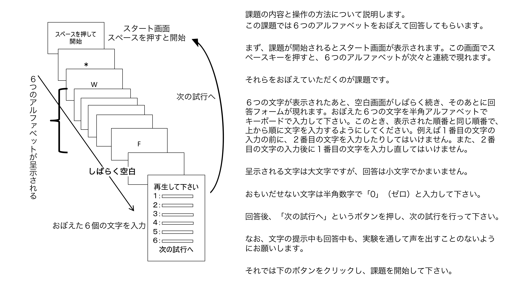
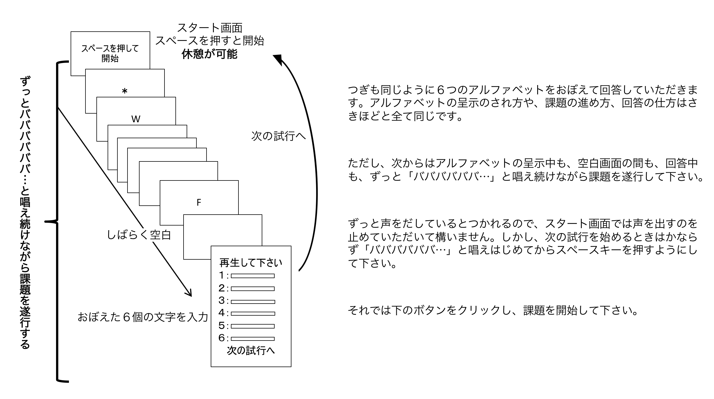

<!-- Copyright (c) 2020 Yuki Tanida
This software is released under the MIT License, see ../LICENSE -->
<!-- This demo is for phonological similarity effect on short-term memory and articulatory suppression effect on the similarity effect (Saito, 1993).
You can try immediate serial recall of six letters. A condition is phonologically simlar condition and another condition is dissimilar condition.
The first block is control condition and the second block is articulatory suppression condition.
At the end of this demo, you can save csv data file locally.
(by Yuki Tanida https://twitter.com/yukitanida)

Reference
齊藤智. (1993). 構音抑制と記憶更新が音韻的類似性効果に及ぼす影響. 心理学研究, 64(4), 289-295.
 ----------------------------------------------->
 <!DOCTYPE html>
<html>
	<head>
		<title>Saito1993</title>
		<meta charset="utf-8">
	  <meta name="viewport" content="width=device-width">

		<!-- Prepare jsPsych plugin ----------------------------------------------->
		<script src="./jspsych/jspsych.js"></script>
		<script src="./jspsych/plugins/jspsych-fullscreen.js"></script>
		<script src="./jspsych/plugins/jspsych-instructions.js"></script>
		<script src="./jspsych/plugins/jspsych-survey-text.js"></script>
    <script src="./jspsych/plugins/jspsych-survey-multi-choice.js"></script>
		<script src="./jspsych/plugins/jspsych-html-keyboard-response.js"></script>
		<link href="./jspsych/css/jspsych.css" rel="stylesheet" type="text/css"></link>


		<!-- Setting -------------------------------------------------------------->
		<script>
			// cm for a letter
			var cmPerLetter = 1;

			// Get participant ID, date , and time ---------------------------------
			// prepare container for participant information
			var par_info = [];

			// random number ID
			var nums = "01234567890123456789";
			var numsLength = nums.length;
			var r_num = "";
			for(var i=0; i<5; i++){
			  r_num += nums[Math.floor(Math.random()*numsLength)];
			}
			par_info.id = r_num;

			// date & time
			var time_date = new Date();
			var year   = time_date.getFullYear();
			var month  = ("0"+(time_date.getMonth()+1)).slice(-2);
			var date   = ("0"+time_date.getDate()).slice(-2);
			var hour   = ("0"+time_date.getHours()).slice(-2);
			var minute = ("0"+time_date.getMinutes()).slice(-2);
			var second = ("0"+time_date.getSeconds()).slice(-2);
			par_info.time = year + month + date + hour + minute + second;
	  </script>


		<!-- Set font for Japenese ------------------------------------------------>
		<style>
			div {
				/* Use other monospace fonts if fail to install M+1m */
				font-family: 'Hiragino Kaku Gothic Pro','ヒラギノ角ゴ Pro W3','メイリオ',Meiryo,'ＭＳ Ｐゴシック',sans-serif;/* 'Osaka-mono', 'Osaka−等幅', 'MS Gothic', 'ＭＳ ゴシック', monospace, sans-serif; */
				line-height: 1.6em;
				text-align: center;
				font-size: 20;
			}
		</style>
	<body></body>


	<!--------------------------------------------------------------------------->
	<!-- jsPsych code ----------------------------------------------------------->
  <!--------------------------------------------------------------------------->
	<script>
		// prepare timeline --------------------------------------------------------
		var timeline = [];

		// full screen -------------------------------------------------------------
		var fullscreen = {
			type: 'fullscreen',
			message: "<div style='text-align:left; padding:20px; font-size:20px; line-height:200%;'>" +
			'これからwebブラウザ（Google ChromeやSafariなどのwebページ閲覧ソフト）を用いて実験課題に取り組んでいただきます。' +
			'まず、ブラウザを全画面表示にする必要があります。' +
			'下のボタンをクリックし、ブラウザを全画面表示に切り替えて下さい。<br<br><br></div>',
			button_label: "全画面表示に切り替え",
			fullscreen_mode: true,
		};
		timeline.push(fullscreen);

		// subject background information-------------------------------------------
		var studentID_age = {
				type: 'survey-text',
				questions: [
				{prompt: "<div style='color:black; text-align:left;'>\n学籍番号を半角数字で入力してください。</div>", columns: 15, required: true, name: 'studentID'},
				{prompt: "<div style='color:black; text-align:left;'>\n年齢を半角数字で入力してください。</div>", columns: 5, required: true, name: 'age'},
				],
				button_label: '次へ',
				on_finish: function(data) {
					par_info.studentID = JSON.parse(data.responses).studentID;
					par_info.age = JSON.parse(data.responses).age;
			  }
		};
		var gender = {
				type: 'survey-multi-choice',
				questions: [
				{prompt: "<div style='color:black; text-align:left;'>性別を選択してください。</div>", options: ['男性', '女性', '答えたくない'], required: true, horizontal: true, name: 'gender'},
				],
				button_label: '次へ',
				on_finish: function(data) {
				par_info.gender = JSON.parse(data.responses).gender;
			}
		};
		timeline.push(studentID_age, gender);

		// instruction1: control ---------------------------------------------------
		var instruction1 = {
			type: "instructions",
			pages: ["</img></div>"],
			key_forward: false,
			key_backward: false,
			allow_backward: false,
			allow_keys: false,
			show_clickable_nav: true,
			button_label_next: ['課題を始めます'],
		};
		timeline.push(instruction1);


	// Trial start from here -----------------------------------------------------

		// startingPage ------------------------------------------------------------
		var startingPage = {
			type: "html-keyboard-response",
			stimulus: function(){
				var html = //"<div>"+
				"<div style='font-size:28px;'>スペースを押して開始</div>";
				return html;
			},
			choices: ["space"],
		};

		// fixation ----------------------------------------------------------------
		var fixation = {
			type: "html-keyboard-response",
			stimulus: function(){
				var html = "<div style='font-size:32px;'>＊</div>";
				return html;
		},
			trial_duration: 500,
			stimulus_duration: 500,
		};

		// blank -------------------------------------------------------------------
		var blank = {
			type: "html-keyboard-response",
			stimulus: "<div></div>",
			trial_duration: 500,
		};

		// stimulus ----------------------------------------------------------------
		var control = [
			{item1: 'K', item2: 'R', item3: 'Y', item4: 'Q', item5: 'J', item6: 'M', sim: 'd', sup: 'c'},
			//{item1: 'R', item2: 'J', item3: 'K', item4: 'M', item5: 'Q', item6: 'Y', sim: 'd', sup: 'c'},
			//{item1: 'Q', item2: 'K', item3: 'J', item4: 'Y', item5: 'M', item6: 'R', sim: 'd', sup: 'c'},
			//{item1: 'T', item2: 'B', item3: 'C', item4: 'G', item5: 'P', item6: 'D', sim: 's', sup: 'c'},
			//{item1: 'P', item2: 'T', item3: 'B', item4: 'C', item5: 'D', item6: 'G', sim: 's', sup: 'c'},
			//{item1: 'Q', item2: 'R', item3: 'J', item4: 'Y', item5: 'K', item6: 'M', sim: 'd', sup: 'c'},
			//{item1: 'C', item2: 'B', item3: 'D', item4: 'G', item5: 'T', item6: 'P', sim: 's', sup: 'c'},
			//{item1: 'M', item2: 'Q', item3: 'Y', item4: 'R', item5: 'K', item6: 'J', sim: 'd', sup: 'c'},
			//{item1: 'B', item2: 'P', item3: 'C', item4: 'T', item5: 'G', item6: 'D', sim: 's', sup: 'c'},
			//{item1: 'G', item2: 'D', item3: 'P', item4: 'B', item5: 'T', item6: 'C', sim: 's', sup: 'c'},
		];

		var suppression = [
			{item1: 'Q', item2: 'J', item3: 'M', item4: 'Y', item5: 'K', item6: 'R', sim: 'd', sup: 's'},
			//{item1: 'C', item2: 'B', item3: 'D', item4: 'G', item5: 'P', item6: 'T', sim: 's', sup: 's'},
			//{item1: 'Y', item2: 'Q', item3: 'R', item4: 'K', item5: 'M', item6: 'J', sim: 'd', sup: 's'},
			//{item1: 'R', item2: 'Y', item3: 'J', item4: 'M', item5: 'K', item6: 'Q', sim: 'd', sup: 's'},
			//{item1: 'R', item2: 'Y', item3: 'M', item4: 'K', item5: 'J', item6: 'Q', sim: 'd', sup: 's'},
			//{item1: 'P', item2: 'B', item3: 'G', item4: 'C', item5: 'D', item6: 'T', sim: 's', sup: 's'},
			//{item1: 'B', item2: 'P', item3: 'C', item4: 'D', item5: 'T', item6: 'G', sim: 's', sup: 's'},
			//{item1: 'T', item2: 'G', item3: 'D', item4: 'B', item5: 'C', item6: 'P', sim: 's', sup: 's'},
			//{item1: 'T', item2: 'D', item3: 'B', item4: 'P', item5: 'C', item6: 'G', sim: 's', sup: 's'},
			//{item1: 'K', item2: 'Y', item3: 'M', item4: 'J', item5: 'Q', item6: 'R', sim: 'd', sup: 's'},
		];
		// randomize list order
		// trial_types = jsPsych.randomization.repeat(trial_types, 1);

		// Stimulus list -----------------------------------------------------------
		// item1
		var item1 = {
			type: "html-keyboard-response",
			stimulus: function(){
				var html = "<div style='font-size:32px;'>" + jsPsych.timelineVariable('item1', true) + "</div>";
				return html;
			},
		  choices: jsPsych.NO_KEYS,
			trial_duration: 1200,
			stimulus_duration: 700,
		};

		// item2
		var item2 = {
			type: "html-keyboard-response",
			stimulus: function(){
				var html = "<div style='font-size:32px;'>" + jsPsych.timelineVariable('item2', true) + "</div>";
				return html;
			},
		  choices: jsPsych.NO_KEYS,
			trial_duration: 1200,
			stimulus_duration: 700,
		};

		// item3
		var item3 = {
			type: "html-keyboard-response",
			stimulus: function(){
				var html = "<div style='font-size:32px;'>" + jsPsych.timelineVariable('item3', true) + "</div>";
				return html;
			},
		  choices: jsPsych.NO_KEYS,
			trial_duration: 1200,
			stimulus_duration: 700,
		};

		// item4
		var item4 = {
			type: "html-keyboard-response",
			stimulus: function(){
				var html = "<div style='font-size:32px;'>" + jsPsych.timelineVariable('item4', true) + "</div>";
				return html;
			},
		  choices: jsPsych.NO_KEYS,
			trial_duration: 1200,
			stimulus_duration: 700,
		};

		// item5
		var item5 = {
			type: "html-keyboard-response",
			stimulus: function(){
				var html = "<div style='font-size:32px;'>" + jsPsych.timelineVariable('item5', true) + "</div>";
				return html;
			},
		  choices: jsPsych.NO_KEYS,
			trial_duration: 1200,
			stimulus_duration: 700,
		};

		// item6
		var item6 = {
			type: "html-keyboard-response",
			stimulus: function(){
				var html = "<div style='font-size:32px;'>" + jsPsych.timelineVariable('item6', true) + "</div>";
				return html;
			},
		  choices: jsPsych.NO_KEYS,
			trial_duration: 1200,
			stimulus_duration: 700,
		};

		// delay
		var delay = {
			type: "html-keyboard-response",
			stimulus: function(){
				var html = "<div></div>";
				return html;
			},
		  choices: jsPsych.NO_KEYS,
			trial_duration: 5000,
			stimulus_duration: 5000,
		};

		// recall ------------------------------------------------------------------
		var trialCounter = 0;
		var recall = {
				type: 'survey-text',
				questions: [
				{prompt: "<div>再生して下さい。<br></div>"+
				         "<div style='color:black; text-align:left;'>１：</div>", columns: 10, required: true, name: 'recall1'},
				{prompt: "<div style='color:black; text-align:left;'>２：</div>", columns: 10, required: true, name: 'recall2'},
				{prompt: "<div style='color:black; text-align:left;'>３：</div>", columns: 10, required: true, name: 'recall3'},
				{prompt: "<div style='color:black; text-align:left;'>４：</div>", columns: 10, required: true, name: 'recall4'},
				{prompt: "<div style='color:black; text-align:left;'>５：</div>", columns: 10, required: true, name: 'recall5'},
				{prompt: "<div style='color:black; text-align:left;'>６：</div>", columns: 10, required: true, name: 'recall6'},
				],
				button_label: '次の試行へ',
				on_finish: function(data) {
					trialCounter++;
					output_node_id = jsPsych.currentTimelineNodeID(); // use grobally
					data.trialNo = trialCounter;
					data.item1 = jsPsych.timelineVariable('item1', true);
					data.item2 = jsPsych.timelineVariable('item2', true);
					data.item3 = jsPsych.timelineVariable('item3', true);
					data.item4 = jsPsych.timelineVariable('item4', true);
					data.item5 = jsPsych.timelineVariable('item5', true);
					data.item6 = jsPsych.timelineVariable('item6', true);

					data.sim  = jsPsych.timelineVariable('sim', true);
					data.sup  = jsPsych.timelineVariable('sup', true);

					data.recall1 = JSON.parse(data.responses).recall1;
					data.recall2 = JSON.parse(data.responses).recall2;
					data.recall3 = JSON.parse(data.responses).recall3;
					data.recall4 = JSON.parse(data.responses).recall4;
					data.recall5 = JSON.parse(data.responses).recall5;
					data.recall6 = JSON.parse(data.responses).recall6;

			}
		};

		// Set phases of trial -----------------------------------------------------
		var test1 = {
			timeline:[startingPage, fixation, blank, item1, item2, item3, item4, item5, item6, delay, recall],
			timeline_variables: control,
		}
		timeline.push(test1);


		// instruction2: control ---------------------------------------------------
		var instruction2 = {
			type: "instructions",
			pages: ["</img></div>"],
			key_forward: false,
			key_backward: false,
			allow_backward: false,
			allow_keys: false,
			show_clickable_nav: true,
			button_label_next: ['課題を始めます'],
		};
		timeline.push(instruction2);

		var test2 = {
			timeline:[startingPage, fixation, blank, item1, item2, item3, item4, item5, item6, delay, recall],
			timeline_variables: suppression,
		}
		timeline.push(test2);

		// ending ------------------------------------------------------------------
		var thankyou = {
			type: "html-keyboard-response",
			stimulus: "<div style='text-align:left; color:black; font-size:28px; line-height:200%;'>" +
			"<p>お疲れさまでした。</p>" +
			"<p>これで実験は終了です。これから全画面表示が解除されると同時に、実験データが記録されたCSVファイルがダウン"+
			"ロードされます。ブラウザの設定によっては「保存」もしくは「許可」という選択肢が現れます。その際は「保存・許可」を選"+
			"択して下さい。そのような表示のない方はファイルが自動的に保存されます。<br><br>"+
			"全画面表示の解除はＱキーです。Ｑキーを押したらダウンローが始まります。ダウンロードが済んだらブラウザを閉じ"+
			"ていただいて構いません。それではＱキーを押してください。<br>"+
			"このたびは研究にご参加いただきどうもありがとうございました。</p></div>",
			choices: ["q"],
		};
		timeline.push(thankyou);

		// exit fullscreen mode
		timeline.push({
			type: 'fullscreen',
			fullscreen_mode: false
		});

		// start experiment --------------------------------------------------------
		// preload img file
		var images = ['Saito1993_instruction_c.png', 'Saito1993_instruction_s.png'];

		jsPsych.init({
			timeline: timeline,
			preload_images: images,
			on_finish: function(data) {

				// Add ID, time, platform in data
				jsPsych.data.addProperties(par_info);

				var data_out = jsPsych.data.get().filterCustom(function(data){
					return data.trialNo > 0;
				});
				data_out.localSave('csv', 'Saito1993_'+ par_info.id +'.csv');
			},
		});
	</script>
</html>
